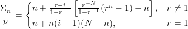

Equity Buildup
Aug. 2021
The mortgage calculator proved that mortgage principal and monthly payments are related by a constant, fixed by monthly interest rate and loan period. The next three articles used this to build a relationship between mortgage sizes and rent, but did not account for a major difference between borrowing and renting—building up equity in a home. The next goal is calculating a combined yield and ultimately comparing home price-to-earnings ratio to other investments.
An optimum equity yield can be computed (unfortunately not analytically solved) based on mortgage and inflation rates, and MATLAB/Octave functions for this can be found here. The most significant results are that this yield comes from owning the loan liability, leveraging the actual down payment invested, and the optimum yield and time for refinancing are significantly impacted by inflation and refinancing costs.
For example, with 20% down payment (Leverage Ratio = 4) on a 2%, 30-year, fixed rate mortgage, refinancing at the optimum time with a fee equal to one year's worth of mortgage payments would return an ≈ 2% annualized rate on the down payment if home prices appreciated 0-2%.

Yield Derivation
The equity gained each month is due to the amount of principal repayed (i.e. difference between principal remaining between month m and m+1) and due to exposure to inflation/deflation of the remaining liability.

Summing these monthly gains over 'n' months shows how inflation affects the profitability of selling your home or the safety net you build up if you ever need to refinance (less a transaction cost 'C').
The proof is appended below, where 'r' and 'inf' are monthly interest and inflation multiplication factors, 'p' is monthly payment, and 'N' is mortgage period 360 months. The effect of refinancing costs (y-intercept) and inflation rate on the number of months before refinancing can result in a profit are shown:

Equity Buildup Proof
The equity gained each month is due to the amount of principal repayed (i.e. difference between principal remaining between month m and m+1) and due to exposure to inflation/deflation of the remaining liability.
Equity buildup uses the same mortgage equations proved for the mortgage calculator, except the loan period 'N' is replaced by a number of 'm' months owned. 'P0' is initial loan principal, 'p' the monthly payment, and 'r' the monthly interest multiplication factor.

The sum of nominal gains over n months 'ΔEn':

Finally, if the mortgage is refinanced or sold before its term ends, there is a transaction cost 'C' which consumes some of the equity gained. This addition limits the model to working best when the inflation is ≤ mortgage rates.